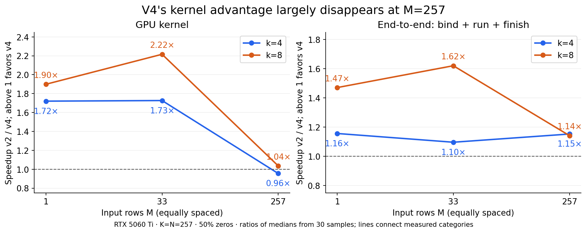
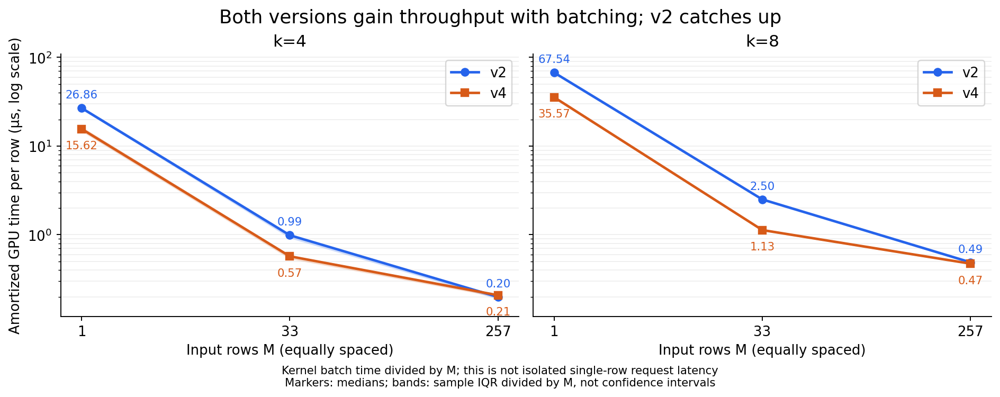

Job 4561 · RTX 5060 Ti · K=N=257 · 50% zeros · 30 samples. V4's kernel advantage largely disappears at M=257; end-to-end latency includes additional effects.
Full interpretation · Numerical comparison

PDF
